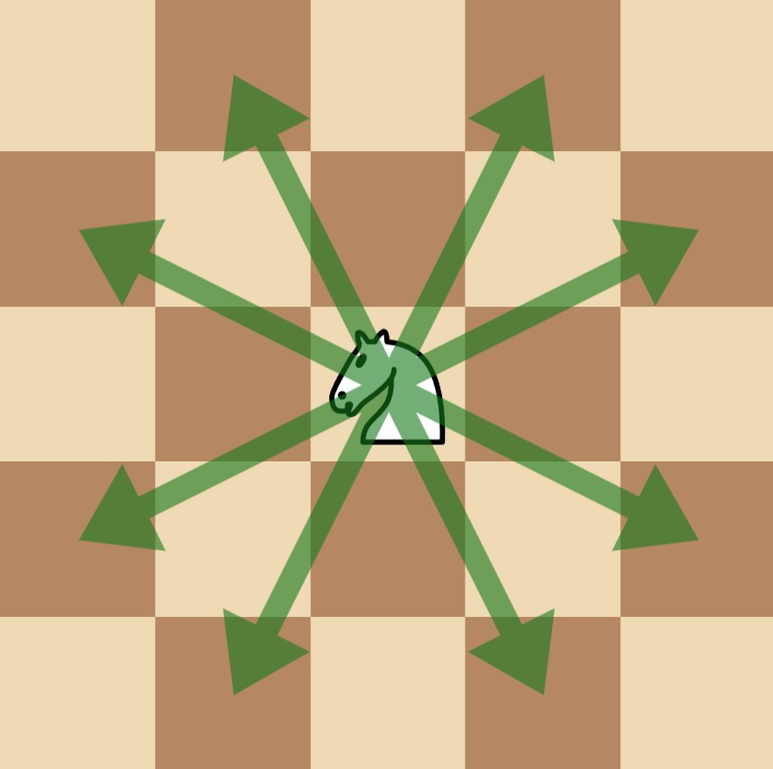
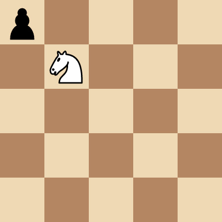
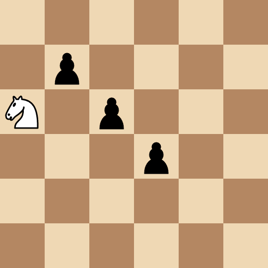

| Category | Difficulty | Likes | Dislikes |
|---|---|---|---|
| Algorithms | Hard | 137 | 12 |
array | math | bit-manipulation | breadth-first-search | game-theory | bitmask
There is a 50 x 50 chessboard with one knight and some pawns on it. You are given two integers kx and ky where (kx, ky) denotes the position of the knight, and a 2D array positions where positions[i] = [xi, yi] denotes the position of the pawns on the chessboard.
Alice and Bob play a turn-based game, where Alice goes first. In each player's turn:
Alice is trying to maximize the sum of the number of moves made by both players until there are no more pawns on the board, whereas Bob tries to minimize them.
Return the maximum total number of moves made during the game that Alice can achieve, assuming both players play optimally.
Note that in one move, a chess knight has eight possible positions it can move to, as illustrated below. Each move is two cells in a cardinal direction, then one cell in an orthogonal direction.

Example 1:
Input: kx = 1, ky = 1, positions = [[0,0]]
Output: 4
Explanation:

The knight takes 4 moves to reach the pawn at (0, 0).
Example 2:
Input: kx = 0, ky = 2, positions = [[1,1],[2,2],[3,3]]
Output: 8
Explanation:

(2, 2) and captures it in two moves: (0, 2) -> (1, 4) -> (2, 2).(3, 3) and captures it in two moves: (2, 2) -> (4, 1) -> (3, 3).(1, 1) and captures it in four moves: (3, 3) -> (4, 1) -> (2, 2) -> (0, 3) -> (1, 1).Example 3:
Input: kx = 0, ky = 0, positions = [[1,2],[2,4]]
Output: 3
Explanation:
(2, 4) and captures it in two moves: (0, 0) -> (1, 2) -> (2, 4). Note that the pawn at (1, 2) is not captured.(1, 2) and captures it in one move: (2, 4) -> (1, 2).
Constraints:
0 <= kx, ky <= 491 <= positions.length <= 15positions[i].length == 20 <= positions[i][0], positions[i][1] <= 49positions[i] are unique.positions[i] != [kx, ky] for all 0 <= i < positions.length.